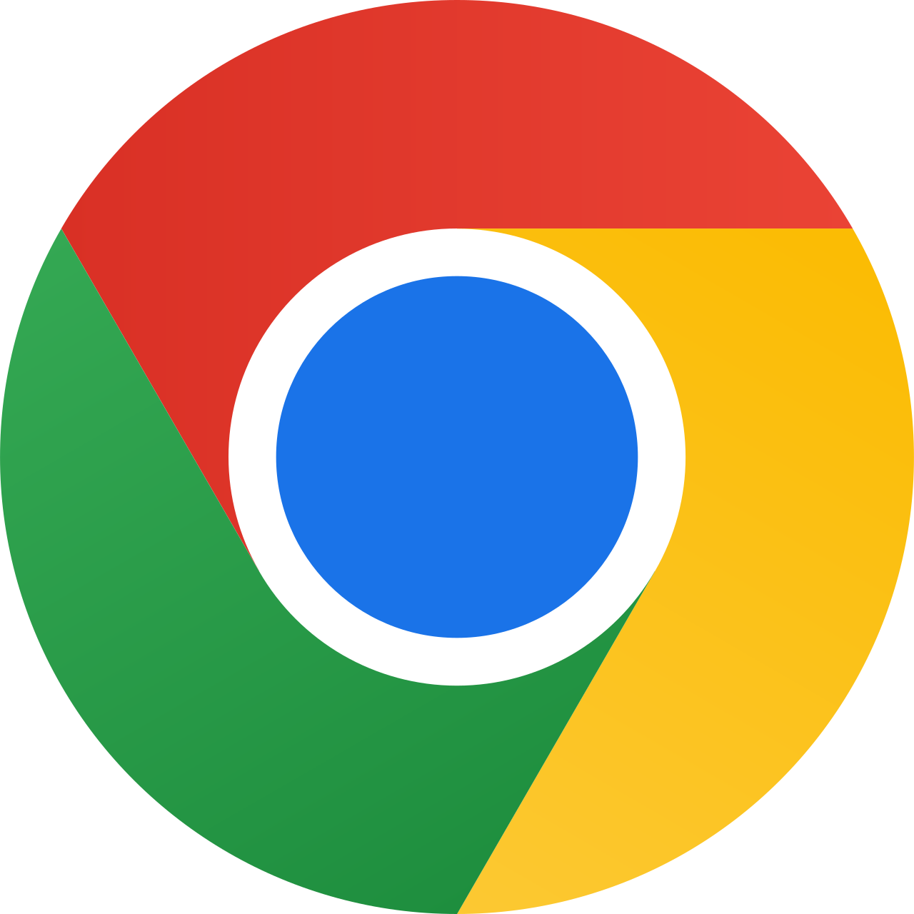
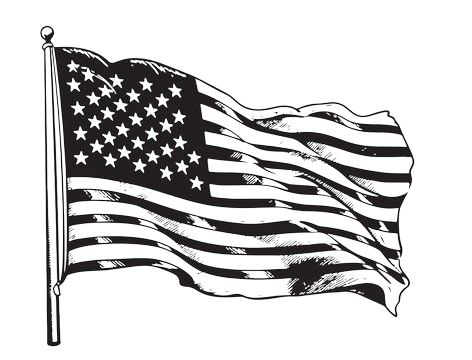

TruhFocuser (Trump) helps you focus on what
matters most, transforming your work game.

1. Click the button located above to view the Github repository of TruhFocuser.
2. Find releases on the right side of the repository files.
3. Download the latest release by clicking on the link.
4. Search chrome://extensions on Google Chrome.
5. Enable "Developer Mode" in the top right corner of the extensions page.
6. Click "Load Unpacked" and select the unzipped folder of the release file.
7. Enable the newly added extension (it should already be enabled).
8. Change sites to your personalized needs.
9. Pin the extension for more efficient changes by
clicking the puzzle icon and clicking the pin button.
10. Get ready to be productive with TruhFocuser!
